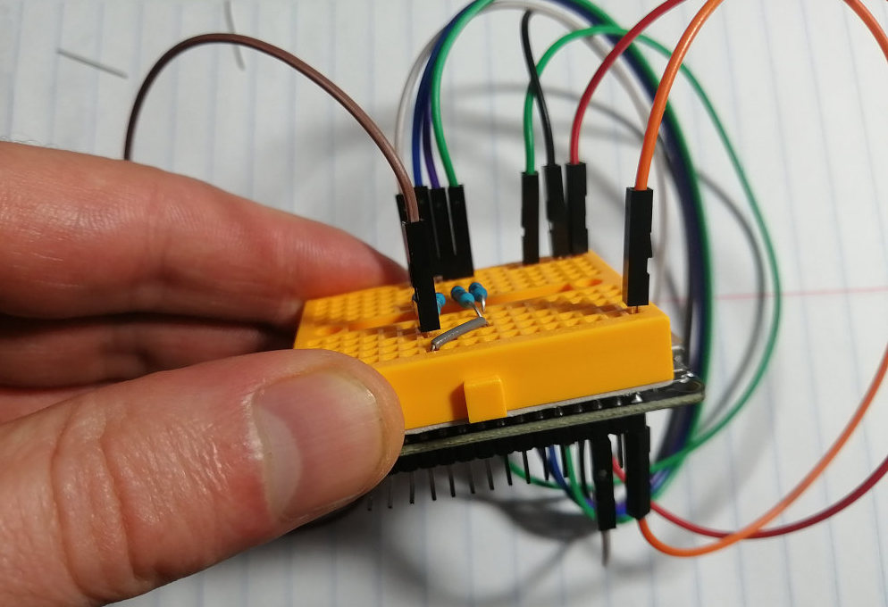
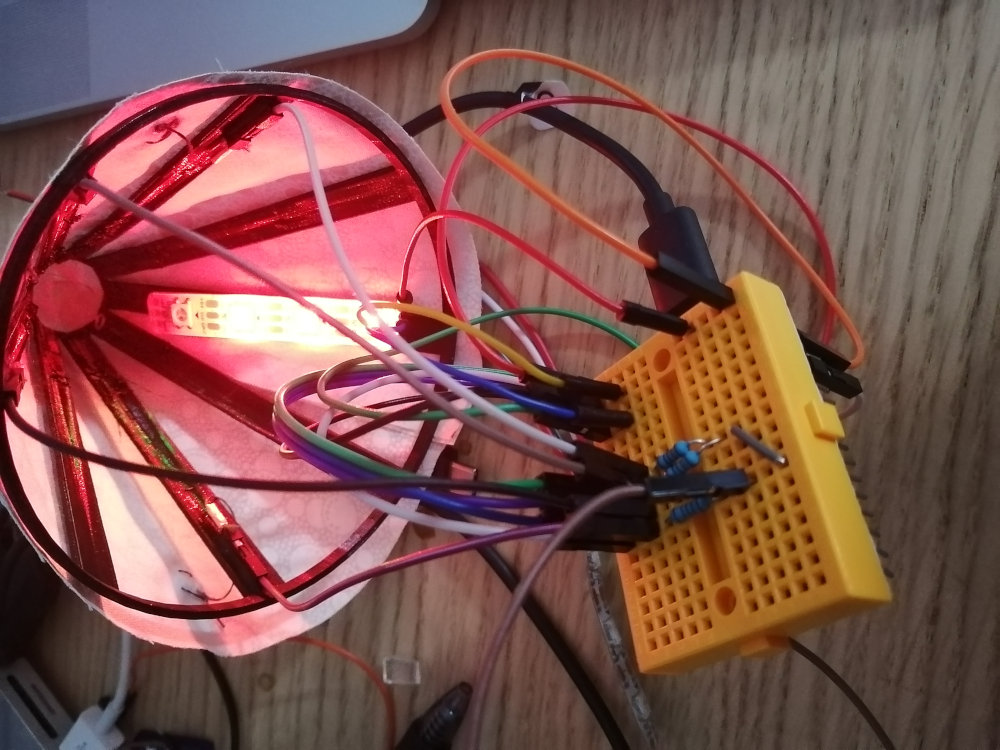
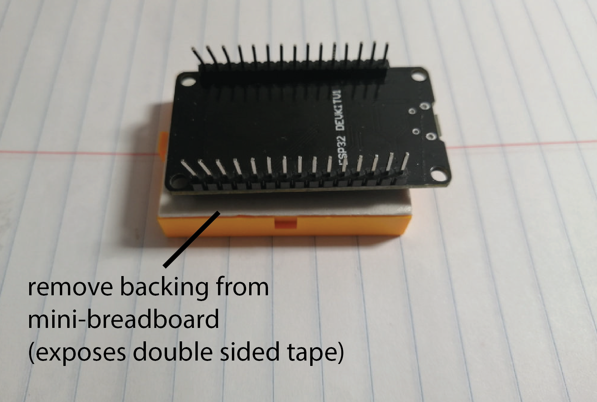
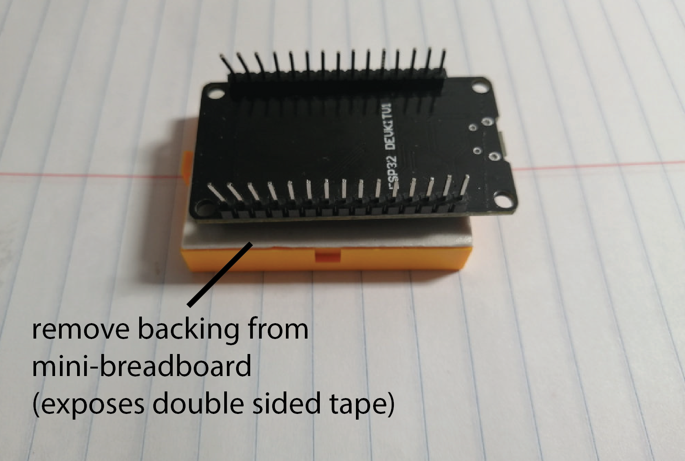

6.810 Engineering Interactive Technologies (fall 2021)
Lab 12: Control Circuit for the Interactive Lamp
In this lab, you will add the circuit to the lamp and then program the lamp to change its color when the user interacts with one of the touch buttons. There is also one touch button to turn the lamp on/off.


Steps:
- Attach Microcontroller to Mini-Breadboard
- Build LED Control Circuit
- Build Touch Control Circuit
- Mount LED and Touch Control Circuits into Lamp Base
- Write Code for Touch Sensing
- Control LED Colors
- Change LED Colors Upon Touch
- Turn Lamp On/off Upon Touch
Deliverables
At the end of the lab, upload to your student google drive:
- the ESP32 code to sense touch and control the LEDs
- 2-3 photos (.jpg or .png) of your 3D printed lamp that shows the circuit and the assembled lamp
- a video that shows how the lamp turns on/off when touching the "on/off" button and how the lamp changes its color when pressing the three color scheme buttons
Help us Improve Class Materials for Lab12:
Please let us know if you had any trouble with slicing or 3D printing or if anything was confusing in the write up.
You can add your comments here.
(1) Attach Microcontroller to Mini-Breadboard
Now that the lamp shade is fully assembled, you can build the circuit for the touch buttons and the LEDs. Since the lamp base is too small for regular breadboards, we supply you with a mini-breadboard.
Tape ESP to Mini-Breadboard: Remove the backing from the mini-breadboard, which will expose a layer of double-sided tape. Next, place your microcontroller onto the layer of double sided tape, the pins of the microcontroller should be facing away from the double sided tape (don't worry, the microcontroller is easy to pull off later if you need to remove it to work on your pset or project).
 

(2) Build LED Control Circuit
Next, we will connect the LEDs to our mini-breadboard. If you look at your LED strip, you can see that there are 3 pins labeled GND, 5V, and DIN.
Connect LED GND to GND pin on ESP: Connect the LED GND wire to the GND pin on the microcontroller. Always connect the GND first to protect the LEDs from voltage spikes, which may blow them up.
Connect LED 5V to VIN pin on ESP: The LEDs need 5V, not 3.3V, which is what we used so far in other labs. The ESP32 can supply 5V at the VIN pin, connect this pin to your LED 5V. Usually, the VIN pin is used to connect to an external power supply (e.g. external battery pack). However, if you connect your ESP with a USB cable to your computer, the pin will use the 5V power supply from the USB cable to drive the pin.
DIN (Data-In): This channel is used to encode which LED should turn on with which color. Connect DIN to a GPIO pin of your ESP32.
(3) Build Touch Control Circuit
Now that the LEDs are wired up, we also need to build the touch control circuit.
Wire Up Conductive Yarn Touch Buttons to Microcontroller: Wire up each of the four touch buttons to the ESP. If you don't remember how the circuit for touch buttons looks like, you can look back at Lab 2. Use a 100kOhm resistor between the sender pin and the 4 receiver pins (reuse your resistors from the music card). Your final circuit should look similar to this:

(4) Mount LED and Touch Control Circuits into Lamp Base
Now place the circut inside your lamp base.
Stick USB cable through Lamp Base Hole: First stick the USB cable through the hole in your 3D printed lamp base.
Connect USB cable to ESP: Next, connect the USB cable to your ESP32 so you can program the lamp.
Place ESP with Circuit Inside Lamp Base: Finally, carefully place the ESP with the circuit inside the lamp base. Don't put the lamp shade on top of the base just yet.

(5) Write Code for Touch Sensing
Let's start programming our lamp by writing the code that can sense touch from all the four touch buttons.
Reuse Code from Lab 2: For touch sensing, you can reuse the code from lab 2. Print your touch signals to the Serial Monitor/Plotter to see if it works. Make sure that you get a clear signal from all 4 touch buttons. Select a suitable threshold for each touch button to detect touch reliably.
(6) Control LED Colors
Next, let's write some code that can change the color of the LEDs.
Individually Addressable LEDs on an LED strip via a Single Pin: The LEDs on the strip are called NEOPIXELS (WS2812B). Each LED represents a 'pixel' that can be addressed individually and can thus change color and brightness independent of the other LEDs on the strip. The DIN (Data-In) pin on the strip transmits a specific protocol to address each LED individually. This is why the LEDs do not turn on immediately when you connect them to the power supply. Instead we first have to provide data through the DIN pin to say which LEDs we want to turn on on the strip and what color and brightness they should have.
Install FastLED library: To control the LEDs, you can use a library that handles the signal encoding for you. This library is called FastLED. You can download it directly from the Arduino IDE by clicking on Sketch->Inlcude Libraries->Manage Libraries. Search for FastLED and install it. If you are interested to see what is available in the FastLED library, you can look at the documentation here.
Include Library in your Code: Before you can use the library in your code, you have to include it at the top of the file:
#include <FastLED.h>
Declaring an LED: To declare an LED, you can use the CRGB datatype.
CRGB led1;
However, rather than declaring 4 LED variables individually to address each LED, we will use an array, which is more convenient.
#define NUM_LEDS 4
CRGB leds[NUM_LEDS];
Add LEDs to Library's Internal Datastructure: The library also requires to add each LED to its internal data structures. You can do this in the setup() function with the following line:
FastLED.addLeds<NEOPIXEL,LED_PIN>(leds,NUM_LEDS)
The function requires the following parameters:
NEOPIXEL: The FastLED library is a generic library for all sorts of LED types. So we need to tell it which LED type we have so it knows which protocol to use to send the data to the LEDs. NEOPIXEL is a constant defined in the documentation of the FastLED library and we can simply use it as an argument here.
LED_PIN: this is the GPIO pin to the DIN pin. This variable has to be a constant so you should declare it with #define.
leds, NUM_LEDS: We already declared these above so you just insert them here.
Define Color for an LED: You can assign a color to an LED by writing:
leds[0] = CRGB::White;
Send Color to the LED: The color is not getting sent to the LED when you assign it. Instead, you have to make the sending explicit by executing the command:
FastLED.show();
Send a few different colors to different LEDs to see if your code works.
(7) Change LED Colors Upon Touch
The last thing that is missing is a piece of code that can change the LED color upon touch. We also want to be able to turn the lamp on/off.
Connect Touch Button Code to Different Color Schemes: Connect your touch button code so that when one of the 3 touch buttons is touched, the lamp will light up in a different color scheme of your choice (e.g. red, green, blue or whatever color scheme you like).
(8) Turn Lamp On/off Upon Touch
Finally, we also want to add functionality for the fourth touch button to turn the lamp on/off.
Turn Lamp On: When the on/off button is touched and the lamp is off, the lamp should turn on. You can either set it by default to a white color or if you want to be fancy you could load the last used color scheme. How do I turn the LEDs off? do I set color to black?
Turn Lamp Off: When the on/off button is touched and the lamp is on, the lamp should turn off.
Put Lamp Shade on Base: Once everything works, put the lamp shade on the base and your lamp is ready. In the future, you could also connect a battery pack to your lamp so you would be able to disconnect your laptop. (could we provide that?)
It would be good to reupload the video without the lab6 designation.
Deliverables
At the end of the lab, upload to your student google drive:
- the ESP32 code to sense touch and control the LEDs
- 2-3 photos (.jpg or .png) of your 3D printed lamp that shows the circuit and the assembled lamp
- a video that shows how the lamp turns on/off when touching the "on/off" button and how the lamp changes its color when pressing the three color scheme buttons
Please let us know if you had any trouble with slicing or 3D printing or if anything was confusing in the write up.
You can add your comments here.
#include <FastLED.h>CRGB led1;
#define NUM_LEDS 4
CRGB leds[NUM_LEDS];
FastLED.addLeds<NEOPIXEL,LED_PIN>(leds,NUM_LEDS)
leds[0] = CRGB::White;
FastLED.show();